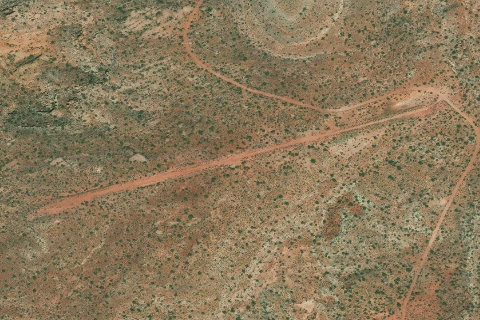

Nokai Dome
NOKAIDOME · UT

Aerial imagery source: Esri, Vantor, Earthstar Geographics, and the GIS User Community
| Identifier | NOKAIDOME |
|---|---|
| State | UT |
| Runway length | 2,100 ft |
| Runway width | 10 ft |
| Surface | Dirt/Gravel |
| Runway | 07/25 |
| Elevation | 5,946 ft |
| Ownership | blm |
| CTAF | 122.9 |
| Coordinates | 37.2787, -110.5721 |
Notes
[ubcp] Description : Add Nokai Dome to your camping bucket list immediately. Located high on a plateau, a steep cliff to the east overlooks Monument Valley and to the west, Lake Powell. A jeep trail that follows the ridge offers some easy hiking. On two occasions we have seen a desert tarantula near the large rocks on the east side. He offered only a quick photo opportunity before finding cover under a rock. His name is Jumper, and still suffers from stage fright. We happened to notice on another camping trip an abundance of mountain lion tracks around our tent in the morning. So, let's zip up our tents at night and put away any curious cardboard boxes that might attract play time! Runway : A soft layer of dirt covers the runway and is normally very smooth. A higher float tire may be required under certain conditions. The strip is narrow with shrub trees relatively close for larger wingspan aircraft. It slopes uphill considerably to the east but is still manageable for a takeoff and landing in both directions. OHV traffic is common here so a close landing survey for any surface defects or large rocks tossed on the runway should be accomplished. Approach Considerations : Crosswinds are very common and may have negative consequences due to the narrow runway and proximity to shrub trees. The cliff to the east and Nokai Dome itself will create significant mechanical turbulence. The tendency to become low on final may be a threat as the upslope of the runway can create that visual illusion. Parking : Several airplanes can be parked here but will block some of the runway. Multiple flat camping areas and fire rings are found on the south side of the runway. Excellent cell phone service here. Amenities : Cal Black airport, which has some basic services, is only a short flight from here. Based on past experiences, a phone call to Cal Black Airport to ensure adequate fuel would be prudent. A restroom, water, picnic table, and indoor lounge area is available.